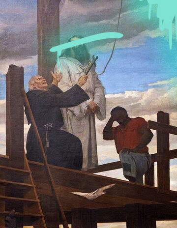
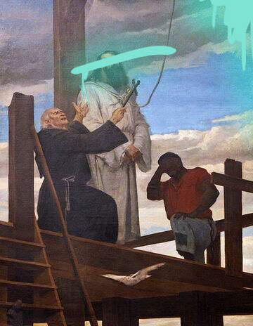

Muitos pintores e diretores artísticos contribuíram também para que a vida de Tiradentes fosse contada como um Marco heroico na história. Tais como:
Décio Villares - Pintor
Décio Rodrigues Villares foi um pintor, escultor, caricaturista e desenhista brasileiro. Ele foi responsável por executar o desenho do disco azul da bandeira do Brasil e por pintar uma das primeiras obras de Tiradentes.
Pedro Américo de Figueiredo e Melo - Pintor
Pedro Américo de Figueiredo e Melo foi um romancista, poeta, cientista, teórico de arte, ensaísta, filósofo, político e professor brasileiro, mas é mais lembrado como um dos mais importantes pintores acadêmicos do Brasil, tendo como referência a sua obra de Tiradentes Esquartejado, originalmente chamado Tiradentes Supliciado.
O Mártir da Independência: Tiradentes (1977) – Filme
A obra mostra como Tiradentes tornou-se um personagem que influenciou diretamente a independência do Brasil. No filme demonstra-se momentos da vida dele como a insurreição e seus últimos dias de vida na forca.
Tiradentes (1999) – Filme
O filme mostra a vida de Tiradentes, um dos líderes da Inconfidência Mineira, movimento que surgiu em Vila Rica em Ouro Preto no ano de 1789.
Joaquim (2017)
O filme demonstra os acontecimentos que levaram Tiradentes, um dentista amador que se transformou-se em um herói nacional. Afinal de contas, ele tornou-se um dos líderes do movimento popular conhecido como “Inconfidência Mineira”.
 
